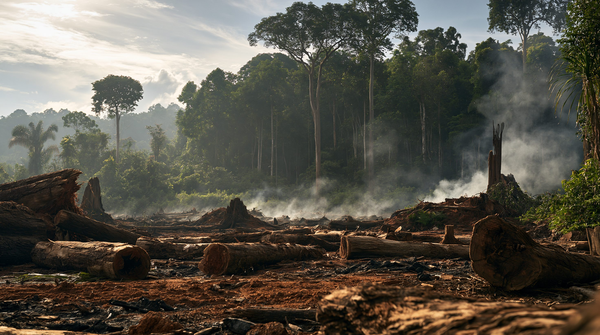
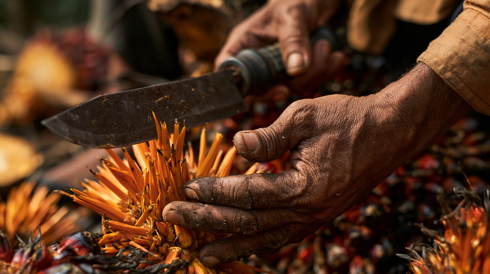
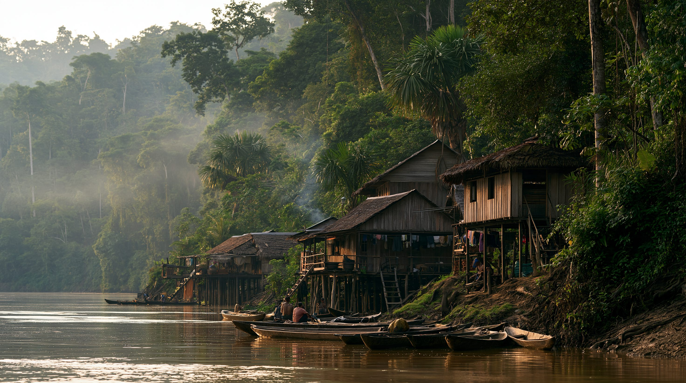

01論点 — 二つの顔を持つ森
熱帯林は二重の性格を持つ。法的には、森はそれが生えている国の領土の一部であり、伐採するかどうかを決める権限はその国にある。同時に、地球の炭素循環と気候の安定に関わる共有財でもある。2026年、この二重性がはっきり表れた。
ブラジルは森林減少を4年連続で減らし、2025年度は近年で最も低い水準まで落とした。同じ年、「切るな」と求めてきた欧州連合は、森林破壊に関わる産品の域内取引を制限する規則の適用を二度延期し、「残したら払う」熱帯林基金は目標額の100億ドルに届いていない。
履行が遅れていたのは、切るなと言った側だった。だが森を守ってきたのは誰か、対価は誰に届くのか。所有と責任の所在は一致しないままである。
切る権利の所在
森はその国の領土内にある。伐採するかどうかを法的に決めるのは、その国自身である（詳細は03）。
買わないという規制
欧州連合は、森林を壊した土地で作られた産品を域内で売らせない規則を作った。輸入する企業に、その産品がどの区画で採れたかを位置情報で示させ、そこで森林破壊が起きていないことを証明させる（詳細は03）。
残したら払うという取引
森を残しても産地国に収入は入らないが、切って農地にすれば収入が生まれる。この非対称を埋めるため、熱帯林基金は残っている森1ヘクタールに年4ドルを支払う（詳細は04）。
切る権利は、誰のものか。森はその国の資源なのか、地球の共有財なのか。この記事は、2026年に交錯した五つの立場から、その境界を探る。

森の伐採地と原生林の境界線。この線をどこに引くかを決める権利が、争点になっている。イメージ画像（生成AI）
02時系列 — 5年の規制と基金
熱帯林をめぐる規制と資金の枠組みは、この5年で組み上がった。
2021年1月 — マレーシアが世界貿易機関に提訴
欧州連合は、森林破壊を招くおそれが大きいとして、パーム油由来のバイオ燃料を再生可能エネルギーの計算から段階的に除外した。マレーシアはこれを自国産品の狙い撃ちだとして世界貿易機関に提訴した（DS600）。
2024年3月 — 世界貿易機関が判断を示す
パネルは欧州連合の環境目的の規制権限を認めつつ、規則の作り方にマレーシアへの「不当な差別」があったと認定した。双方の主張が一部通った。
2025年5月22日 — 産地国を森林破壊リスクで格付け
欧州委員会が産地国を高・標準・低の3段階に分けた。低リスク国からの輸入は簡易な確認で通るが、それ以外は書類の点検や抜き取り検査が重くなる。高リスクはロシア・ベラルーシ・ミャンマー・北朝鮮の4カ国のみで、ブラジルとインドネシアは中間の「標準リスク」だった。
2025年11月6日 — 熱帯林基金が発足
ブラジル・ベレンのCOP30で熱帯林基金（TFFF）が発足した。森を残した国に毎年支払い、切るより残すほうが割に合う状態を作ることを目的とする。53カ国が宣言を支持し、初期表明額は55億ドルを超えた。
2025年12月4日 — 適用を二度目の延期
欧州連合が森林破壊防止規則の適用を二度目の延期で合意した。中規模・大規模は2026年12月30日、零細・小規模は2027年6月30日からとなった。
2026年8月 — 逆方向に動いた二つの国
ブラジルの衛星警報が捉えた森林減少は2,874平方キロメートルとなり、現行システム導入以来の最低だった。同じ年、インドネシアの森林減少は前年比66%増と発表されていた。
2026年9月3日 — イギリスが基金に加わる
イギリスが4億ポンドの融資を表明した。最大の出し手であるノルウェーは、基金全体が2026年末までに100億ドルに達することを自国の30億ドル拠出の条件としている。9月時点で、その水準には届いていない。
熱帯林由来の産品は、輸出港を通じて欧州市場に渡る。この流通経路が規則の対象になる。イメージ画像（生成AI）
035つの視点 — 誰が「切る権利」を語るか
立場により、「切る権利」の捉え方も次に打つ手も異なる。
「我々は減らした。次は、残せと言った側の番だ」
森林減少を4年連続で抑え、2025年度は5,796平方キロメートルまで減らした。国内の取り締まりの成果であり、残す側への対価を機能させるべきだと主張する。
重視：基金の実効性
森を持つ国
「アメリカの大豆農家は、位置情報を欧州に渡すのか」
インドネシアのパーム油の41%、687万ヘクタールは小農が管理する。欧州連合に売るには、自分の畑の区画を位置情報で示し、そこが森林を壊した土地でないと書類で証明しなければならない。測量も記録も自前で用意することになり、収入の乏しい農家ほど負担が重い。
重視：証明費用を負担できない小規模生産者
規制の末端
「開発にも保全にも、我々の同意はなかった」
アマゾンでは2003年から2016年のあいだに、先住民の土地が失った森林の炭素はその0.3%未満だった。同じ期間、先住民地でも保護区でもない土地は3.6%を失っている。最も森を残してきたのに、切る権利も基金の配分も国家が握る。
重視：基金配分への直接の関与
主権を持たない当事者
「我々の消費が壊しているなら、買わないのが責任だ」
域内の消費が、世界の森林減少の約1割を引き起こしている。だから木材・ゴム・パーム油・大豆・牛肉・コーヒー・カカオの7品目について、森林を壊した土地で作られた産品は域内で売らせない。産地国に切るなと命じてはいない。自分たちが何を買うかを決めているだけだ、という立場をとる。
重視：域内市場からの排除の正当性
買う側
「証明できない産品は、扱えない」
産品がどの区画で採れたかを、仕入れ先をさかのぼって一つ残らず集めなければならない。小規模な生産者が何千と連なる仕入れ経路ほど、その作業は難しい。欧州委員会は簡素化で対応費用を約75%削減できるとするが、残る負担を誰が持つかは決まっていない。
重視：対応コストの負担先
証明を負う側
5つの視点の比較

証明の費用を負うのは誰か。規則の負担は、書類を整えられる側とそうでない側で分かれる。イメージ画像（生成AI）
04データ — 同じ年に逆方向へ動いた森
ブラジルとインドネシアは同じ年に反対方向へ動いた。
同じ年に、逆方向へ動いた森（前年比）
ブラジルの2本は、確定値を出すPRODESと、速報の警報を出すDETERという別々の観測で、対象はアマゾンの法定区域。インドネシアの1本は民間団体が国全体を暦年で集計したもの。集計の仕方が違うため、減少幅の大小はそのまま比べられない。同じ時期に森が逆方向へ動いたことを示す図として見てほしい。
出典：ブラジル国立宇宙研究所（INPE）、Auriga Nusantara（詳細は06）
森林炭素を、誰が失わなかったか（アマゾン、2003〜2016年）
先住民地は原資料で「0.3%未満」とされ、上限値としてグラフに示している。
出典：World Resources Institute（詳細は06）
5,796km²
ブラジル・アマゾンの2025年度の森林減少。11年ぶりの低さ
433,751ha
インドネシア2025年の森林減少。8年ぶり高水準
100億ドル
熱帯林基金が2026年末までに集める必要のある額。9月時点で未達
20%
基金の支払いのうち先住民・地域社会に配分される最低割合
05深掘り — 切った側が、基準を作っている
数字の背後にあるのは、誰が先に切り、誰がいま基準を作るかという非対称である。
先に切った国が、いま基準を作る
いま基準を作っている欧州も、かつては自分の森を切って豊かになった。地層に残る花粉の分析によれば、中緯度ヨーロッパの陸地に占める森林の割合は、この6,000年で約65%から約38%へ下がっている。切り終えた側が、いま切るなという基準を作っている。この経緯は規則を無効にするものではない。ただ、産地国が規則を受け入れにくい理由の一つはここにある。
規制は誰を締め出すか
森林破壊防止規則は、産地国に伐採をやめろとは言わない。欧州連合の市場で売りたければ、その産品がどの区画で採れたかを示し、そこが森林を壊した土地でないと証明せよ、と求めるだけである。この規則が問うのは、伐採の有無そのものより、それを示せるかどうかである。すると負担は、書類を整える力のない側に集中する。インドネシアのパーム油の41%を担う小農がそこにいる。森を切っていなくても、切っていないと証明できなければ市場から外れる。締め出されるのは森を壊した国家ではなく、証明できない生産者だった。
金で権利を買えるか
基金は残っている森1ヘクタールに年4ドルを払い、新たに切られた1ヘクタールにつき400〜800ドルを差し引く。切る権利を否定せず、行使しないことに値段をつける方式である。先住民・地域社会に回すよう定められているのは支払いの2割以上までで、残る8割は国家に渡る。最もよく森を守ってきた人々に届く保証はない。9月にイギリスが加わってなお、年末の100億ドルには届いていない。
「切る権利は誰のものか」という問いに、一つの答えは出ない。法的にはその国のもの、行使せず森を残してきたのは先住民、対価を払うと言ったのは消費国だった。所有する者、行使しない者、支払う者が、それぞれ別にいる。

森を守ってきたのは、必ずしも法的な権利を持つ側ではなかった。イメージ画像（生成AI）